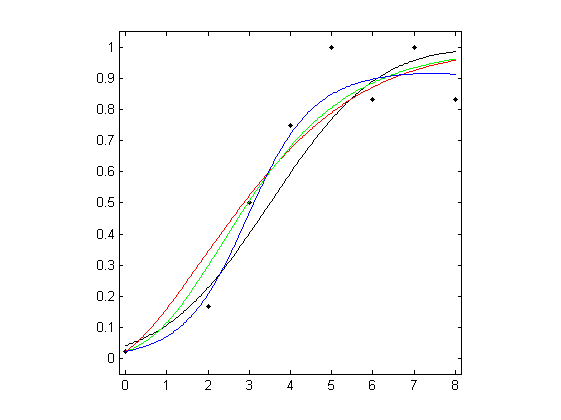

Model-free estimation of a psychometric function |
|
|---|---|
| Home | Downloads | Demonstration | Documentation | Examples | Functions | Contacts |
|---|
Baker, R. J., Jayewardene, D., Sayle, C., & Saeed, S. “Failure to find asymmetry in auditory gap detection”, Laterality: Asymmetries of Body, Brain and Cognition, 13, 1-21, 2008.
MatLab R A 300-ms noise burst containing a gap of 2–8 ms duration or no gap was presented to one ear of a subject. The symbols in the figure below show the proportion of responses "gap" as a function of gap duration. There were 12 trials with each gap duration and 84 trials with no gap.
Parametric and local linear fitting
Three different parametric models and the local linear fitting are used and fits are plotted against the measured psychometric data. Three different parametric models are fitted to these data: Gaussian (probit), Weibull, and reverse Weibull. Local linear fitting is also performed with the bandwidth
bwd chosen by the minimising cross-validated deviance. Load the data and plot the measured psychometric data (black dots):
clear, load examples/example_07;
figure; plot( x, r ./ m, 'k.'); axis([-0.15 8.15 -0.05 1.05]); axis square;1. For the Gaussian cumulative distribution function (black curve):
degpol = 1; % Degree of the polynomial
b = binomfit_lims( r, m, x, degpol, 'probit' );
numxfit = 199; % Number of new points to be generated minus 1
xfit = [min(x):(max(x)-min(x))/numxfit:max( x ) ]';
% Plot the fitted curve
pfit = binomval_lims( b, xfit, 'probit' );
hold on, plot( xfit, pfit, 'k' );2. For the Weibull function (red curve):
[ b, K ] = binom_weib( r, m, x );
guessing = 0; % guessing rate
lapsing = 0; % lapsing rate
% Plot the fitted curve
pfit = binomval_lims( b, xfit, 'weibull', guessing, lapsing, K );
hold on, plot( xfit, pfit, 'r' );3. For the reverse Weibull function (green curve):
[ b, K ] = binom_revweib( r, m, x, 1, 5 );
% Plot the fitted curve
pfit = binomval_lims( b, xfit, 'revweibull', guessing, lapsing, K );
hold on, plot( xfit, pfit, 'g' );4. For the local linear fit (blue curve):

bwd_min = min( diff( x ) );
bwd_max = max( x ) - min( x );
bwd = bandwidth_cross_validation( r, m, x, [ bwd_min, bwd_max ] );
% Plot the fitted curve
bwd = bwd(3); %choose the third estimate, which is based on cross-validated deviance
pfit = locglmfit( xfit, r, m, x, bwd );
hold on, plot( xfit, pfit, 'b' );